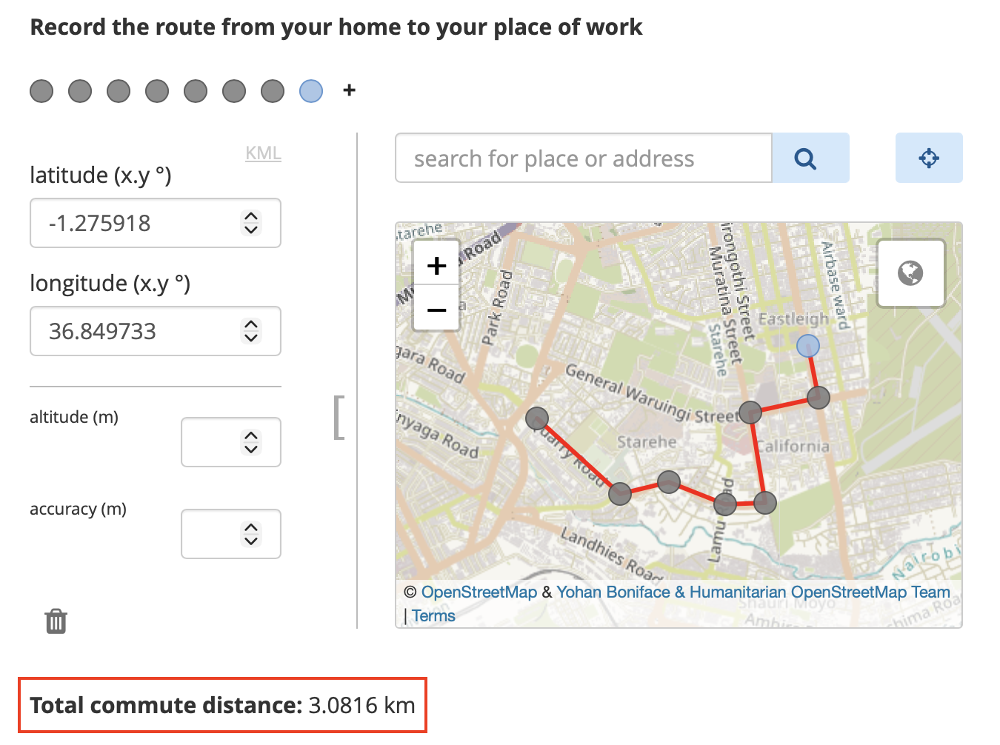

Busca en nuestra documentación, explora nuestros recursos y visita nuestro Foro de la Comunidad para obtener información más detallada
Última actualización: 23 Apr 2026
KoboToolbox te permite recolectar datos de GPS en tus formularios, incluso cuando trabajas sin conexión a internet. Las preguntas GPS pueden capturar una sola ubicación, una ruta o un área durante la recolección de datos. Esto es útil para tareas como mapear infraestructura, hacer seguimiento de visitas de campo, monitorear sitios ambientales o registrar ubicaciones de servicios. Los datos de GPS se pueden recolectar tanto con formularios web como con KoboCollect.
Este artículo explica cómo recolectar datos de GPS en KoboToolbox, incluyendo los tipos de preguntas GPS disponibles, cómo se recolectan los datos de GPS en formularios web y en KoboCollect, cómo usar datos de GPS en lógica avanzada de formularios, cómo gestionar datos de GPS en KoboToolbox y cómo resolver problemas comunes de GPS.
KoboToolbox admite tres tipos de preguntas GPS para recolectar datos geográficos directamente en un formulario, varias opciones de metadatos que recolectan información de ubicación automáticamente en segundo plano, y preguntas de selección basadas en mapas en XLSForm.
Las preguntas GPS son visibles para los encuestados. Permiten que los encuestados recolecten coordenadas GPS seleccionando manualmente o registrando automáticamente un punto, una línea o un área. Los siguientes tipos de preguntas GPS están disponibles en KoboToolbox:
Formbuilder |
XLSForm |
Descripción |
|---|---|---|
Point |
|
Recolecta una sola ubicación geográfica, como las coordenadas de una escuela, clínica o vivienda. |
Line |
|
Recolecta múltiples puntos GPS que forman una línea, como un camino, carretera o ruta. |
Area |
|
Recolecta múltiples puntos GPS que forman un área cerrada, como una parcela de tierra o un campo. |
Para obtener más información sobre cómo agregar preguntas GPS a tus formularios, consulta Preguntas GPS en KoboToolbox y Tipos de preguntas en XLSForm.
Las preguntas de metadatos GPS no son visibles para los encuestados. Cuando se activan, recolectan datos de GPS automáticamente en segundo plano durante el llenado del formulario. Los siguientes tipos de preguntas de metadatos están disponibles en KoboToolbox:
Formbuilder |
XLSForm |
Descripción |
|---|---|---|
audit |
|
Registra la ubicación GPS detallada y otra información de auditoría durante el llenado del formulario, incluyendo información de ubicación para cada pregunta a medida que se completa el formulario. |
start geopoint early |
|
Captura automáticamente una sola ubicación en segundo plano cuando se abre el formulario. |
No disponible |
|
Captura automáticamente una sola ubicación en segundo plano después de que los encuestados responden una pregunta específica. |
Para obtener más información sobre cómo agregar metadatos GPS a tus formularios, consulta Agregar metadatos en el Formbuilder y Metadatos en XLSForm.
Además de recolectar coordenadas GPS, también puedes permitir que los encuestados seleccionen ubicaciones predefinidas en un mapa en XLSForm. Esto se configura usando una pregunta de selección con la apariencia map o quick map, junto con una columna geometry en la hoja choices que almacena las coordenadas de cada opción.
Para obtener más información sobre cómo configurar preguntas de selección desde un mapa, consulta Seleccionar opciones de un mapa.
Los datos de GPS se pueden recolectar tanto en formularios web como en la aplicación KoboCollect, pero el proceso de recolección difiere entre ellos.
Al usar formularios web, los encuestados pueden ingresar datos de GPS de varias maneras:
Detectar la ubicación actual del dispositivo
Seleccionar una ubicación directamente en el mapa
Buscar una dirección
Ingresar coordenadas GPS manualmente
Para preguntas de línea y área, los encuestados pueden agregar múltiples puntos en el mapa para crear una ruta o polígono.

Nota: Puedes detectar la ubicación actual del dispositivo haciendo clic en el botón de ubicación en la esquina superior derecha, junto a la barra de búsqueda.
Puedes usar apariencias para cambiar cómo se muestra la pregunta GPS en los formularios web, específicamente para ocultar los campos de entrada de coordenadas GPS. Sin embargo, los formularios web no te permiten impedir completamente la selección manual de ubicación. Si quieres recolectar una ubicación automáticamente sin permitir la selección manual, usa background-geopoint en su lugar.
En KoboCollect, los datos de GPS se capturan automáticamente desde la ubicación actual del dispositivo cuando el usuario toca un botón. La selección manual de ubicación no está activada por defecto para las preguntas de punto, aunque las apariencias adicionales pueden cambiar el comportamiento de las preguntas GPS.
El método de captura en KoboCollect varía según el tipo de pregunta:
Tipo de pregunta |
Captura de datos GPS |
|---|---|
Point / |
Toca Get point para comenzar a capturar la ubicación del dispositivo.
|
Line / |
Toca Get line y haz clic en para elegir un método de entrada. Los métodos disponibles son:
|
Area / |
Toca Get polygon y haz clic en para elegir un método de entrada. Los mismos métodos de entrada descritos anteriormente están disponibles, pero para crear un área cerrada en lugar de una línea. Un área requiere al menos tres puntos. |
Más allá del comportamiento predeterminado, puedes usar apariencias para cambiar cómo funcionan las preguntas GPS en KoboCollect. Por ejemplo, puedes usar apariencias para:
Mostrar un mapa de la ubicación seleccionada automáticamente
Activar la selección manual de ubicación
Para obtener más información sobre las apariencias de preguntas GPS, consulta Preguntas GPS en KoboToolbox.
También puedes configurar los ajustes de mapa de KoboCollect para controlar cómo se muestran los mapas en las preguntas basadas en GPS, incluyendo la definición de la fuente del mapa, la selección de un estilo de mapa y la adición de capas de mapas sin conexión.
Para obtener más información sobre los ajustes de mapa de KoboCollect, consulta Personalizar la configuración de KoboCollect.
La precisión del GPS depende tanto del dispositivo como del entorno. Puede verse afectada por factores como si el dispositivo tiene el GPS activado y un sensor GPS integrado, cuándo fue la última vez que determinó su ubicación, si está usando servicios de ubicación por satélite o por red, y las condiciones ambientales como la nubosidad o los edificios y árboles cercanos.
Al crear formularios en XLSForm, puedes usar parámetros para controlar la precisión del GPS con mayor detalle.
Los parámetros más comunes son:
Parámetro |
Ejemplo |
Descripción |
|---|---|---|
|
|
Captura automáticamente el punto una vez que el dispositivo alcanza la precisión objetivo. Si se configura como 0, el encuestador debe aceptar el punto explícitamente. El valor predeterminado es 5 metros. |
|
|
Activa un mensaje de advertencia si la precisión del GPS no está dentro del umbral de precisión especificado. Esto no impide guardar el punto. El valor predeterminado es 100 metros. |
Nota: Para la mayoría de los flujos de trabajo, un capture-accuracy de alrededor de 5 metros es un objetivo práctico. En general, no se recomienda establecer el objetivo por debajo de 3 metros a menos que estés usando un dispositivo GPS externo, ya que el GPS integrado de los dispositivos a menudo no es suficientemente preciso para alcanzar ese nivel de manera confiable.
Para mejorar la precisión del GPS:
Recolecta datos al aire libre en un área abierta con vista despejada del cielo
Aléjate de edificios, árboles y otras obstrucciones
Asegúrate de que tu cuerpo no esté bloqueando la vista del cielo del dispositivo
Precalienta el GPS del dispositivo incluyendo start-geopoint al inicio de tu formulario
Activa el GPS asistido en el dispositivo si está disponible
KoboToolbox admite lógica avanzada de formularios con datos de GPS en XLSForm. Por ejemplo, puedes usar funciones GPS en cálculos, restricciones y lógica de omisión para medir distancias, perímetros o áreas, o para verificar si una ubicación se encuentra dentro de un límite definido.

Las funciones GPS más comunes son:
Función |
Descripción |
|---|---|
|
Devuelve el área, en metros cuadrados, de un valor |
|
Devuelve la distancia, en metros, de:
|
|
Devuelve |
Para obtener más información sobre las funciones para manipular datos de GPS en XLSForm, consulta Usar funciones en XLSForm.
Después de la recolección, los datos de GPS se pueden revisar, mapear y exportar en KoboToolbox.
Las respuestas GPS aparecen en la tabla de datos como otras respuestas del formulario. Un punto GPS único se almacena como cuatro valores separados por espacios en este formato: latitud longitud altitud precisión.
Para preguntas de línea y área, múltiples puntos GPS se almacenan en el mismo formato y se separan por punto y coma.
Para obtener más información sobre cómo ver tus datos en la tabla de datos, consulta Ver y validar datos.
KoboToolbox ofrece una vista de Mapa integrada para visualizar puntos GPS individuales. Esto facilita revisar dónde se recolectaron los envíos, explorar patrones espaciales y comprender mejor la distribución geográfica de tus datos.
Para obtener más información sobre la vista de Mapa en KoboToolbox, consulta Mapear datos GPS.
También puedes exportar datos de GPS desde KoboToolbox para usarlos en software externo. Los formatos de exportación disponibles admiten diferentes flujos de trabajo, desde la revisión y limpieza de datos hasta el mapeo y el análisis geoespacial:
Las exportaciones CSV y XLS son útiles para trabajar con datos de GPS en software de hojas de cálculo y también se pueden importar en muchas herramientas GIS, aunque a menudo requieren configuración adicional, como definir los campos de coordenadas o un sistema de referencia de coordenadas.
Para flujos de trabajo GIS, GeoJSON es generalmente el formato recomendado porque es ampliamente compatible con herramientas como ArcGIS y QGIS.
KML está pensado principalmente para la visualización en aplicaciones como Google Earth y admite estilos básicos de mapa, pero es más limitado y se recomienda usarlo solo cuando sea necesario para un flujo de trabajo específico.
Para obtener más información sobre cómo exportar tus datos de GPS para análisis externo, consulta Exportar datos GPS.
capture-accuracy sea demasiado estricto para el dispositivo o las condiciones de campo.
¿Encontraste lo que buscabas? ¿Te ha parecido clara la traducción? ¿Faltaba algo?
¡Comparte tus comentarios para ayudarnos a mejorar este artículo!